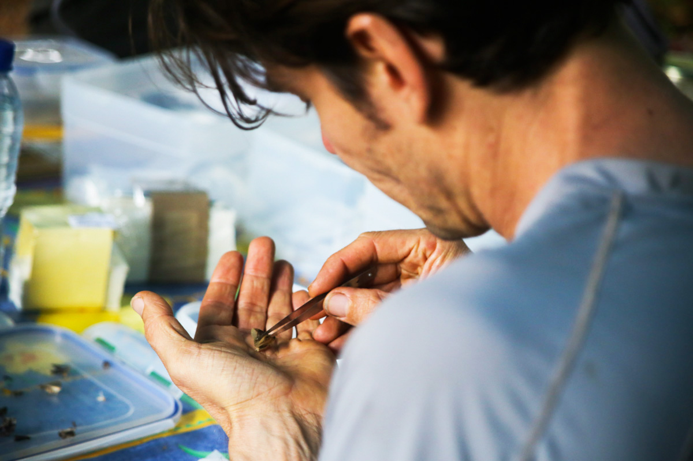
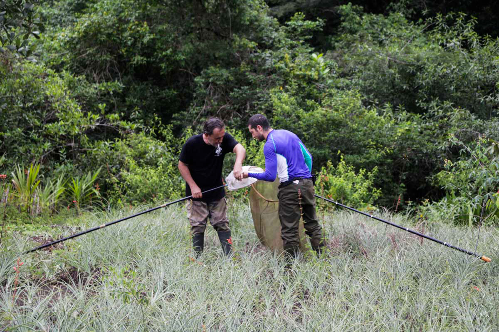
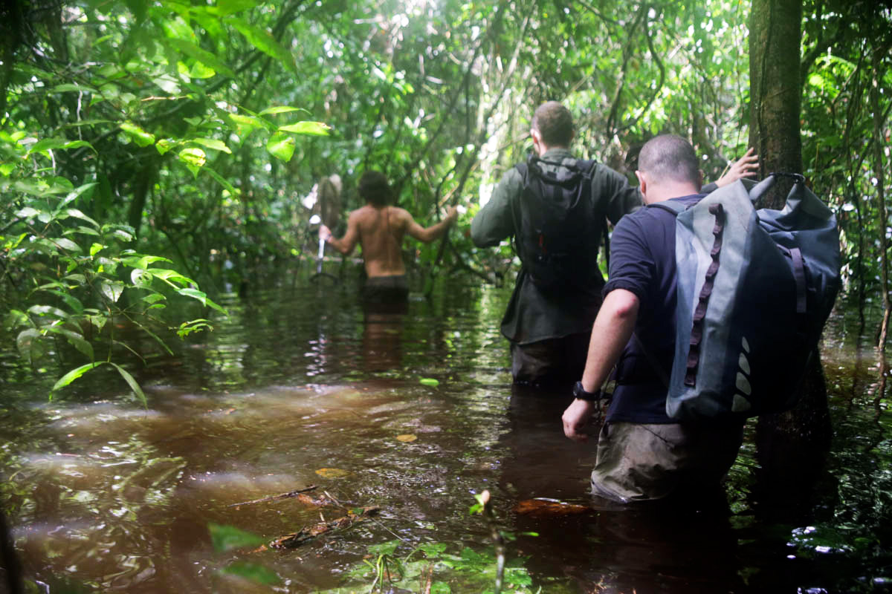
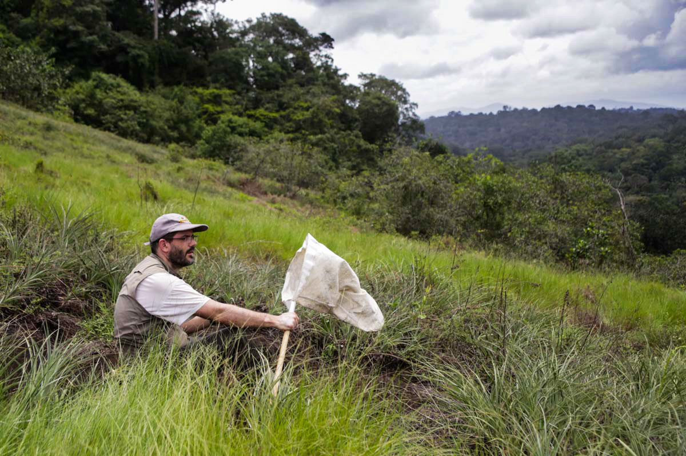
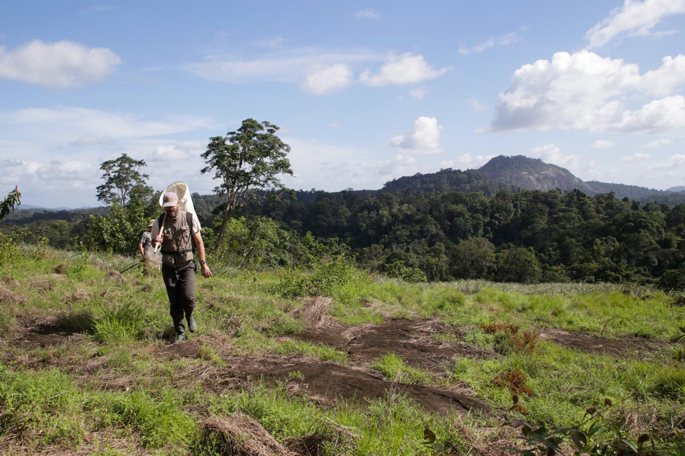
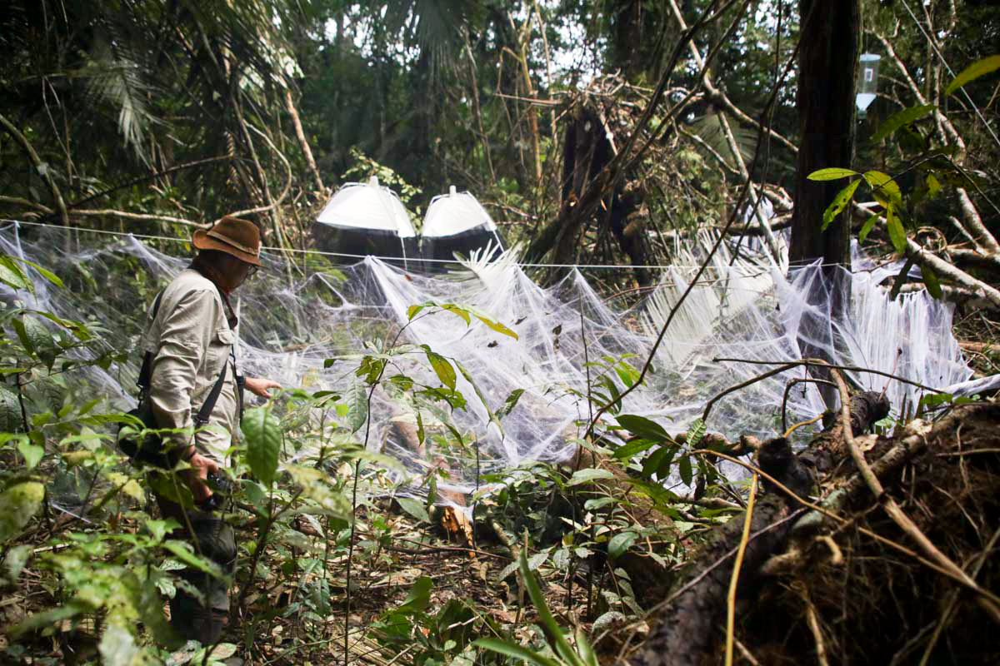
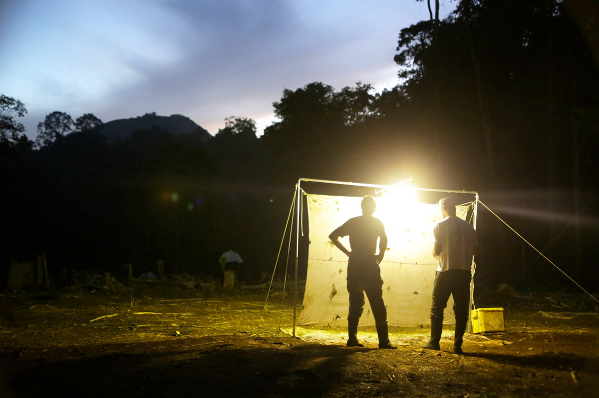

Rares sont les entomologistes, ces spécialistes des insectes, à s’être aventurés ainsi jusqu’au massif du Mitaraka. Lorsqu’une dizaine de ces passionnés se retrouvent dans ce lieu où presque tout reste à découvrir, rien n’est alors laissé de côté pour maximiser les chances de capturer de nouvelles espèces. De l’art de transformer un drap, une lampe, une assiette ou encore de la fausse toile d’araignée en pièges redoutables.
Plus d’un tiers des scientifiques présents sur cette expédition sont entomologistes. Pour Olivier Pascal, qui dirige ce volet terrestre en Guyane, c’était une évidence. « C’est logique au regard de la proportion d’espèces restant à découvrir dans les différents groupes, résume-t-il. Pour cataloguer le vivant, c’est bien évidemment dans les groupes d’invertébrés qu’il faut produire un effort, dans cette biodiversité négligée. » Négligée, elle est loin de l’être ici.
Une dizaine d’entomologistes, avec chacun sa spécialité, couvrent quasiment l’intégralité des groupes d’insectes : coléoptères, mouches, sauterelles, papillons, blattes, fourmis… Chaque participant a ainsi été minutieusement sélectionné par les coordinateurs scientifiques de l’expédition, plusieurs mois avant la phase de terrain. « Lors du conseil scientifique, le plus dur a été de faire ce casting », estime Julien Touroult, coordinateur scientifique de la partie entomologie. « Il fallait éviter d’avoir des personnes avec les mêmes spécialités pour maximiser les compétences et représenter chaque organisme, mais aussi constituer une équipe de gens polyvalents. » Car si chacun a sa spécialité, tous possèdent de solides connaissances sur les autres familles d’insectes. Il n’est ainsi pas rare de voir un lépidoptériste – spécialiste des papillons – rapporter à ses collègues un coléoptère ou un grillon qui lui semble intéressant. Dix spécialistes, une seule équipe.
-

Eddy Poirier, entomologiste, trie les insectes pris dans les pièges Malaises.
-

Deux lépidoptéristes comparent leurs prises dans les filets à papillon.
Pour capturer un maximum de spécimens intéressants, le nombre de chercheurs ne fait cependant pas tout : il faut les équiper. Sur ce point, le conseil scientifique a vu les choses en grand, avec plusieurs centaines de kilos de matériel de capture. Car si certains entomologistes chassent toujours « à vue », l’image d’Epinal du naturaliste parcourant la forêt avec son filet à papillon a un peu vieilli. Par exemple, parmi l’arsenal déployé sur le camp, personne n’a pu manquer d’apercevoir de curieux champignons de deux mètres de haut qui semblent avoir poussé sur tous les layons nous entourant. Appelés « pièges Malaise », ces dômes de toile, placés sur les zones de passage des insectes, interceptent tout invertébré ailé qui, une fois posé sur la toile, aura tendance à la remonter pour terminer sa course dans un pot fixé à son sommet. Trente-deux de ces dispositifs vont ainsi capturer des dizaines de milliers d’insectes tout au long de l’expédition, complétés par un Malaise format « XXL » de six mètres de long.
Un autre dispositif répondant à un comportement typique de certains insectes, qui se laissent tomber au sol en cas de danger, a été imaginé. Le principe est simple : une grande plaque de plexiglas placée au-dessus d’une gouttière collectant les insectes qui auront la mauvaise idée de percuter ce mur transparent. Plus élémentaire encore, le filet cryldé, un nom barbare qui cache une simple toile d’araignée synthétique de farces et attrapes – certains se moquent encore des quatre araignées en plastique livrées avec le paquet. Avec un kilo de cette toile tendue dans la forêt, les insectes pris au piège devraient être nombreux… Pour capturer les mouches, Marc Pollet, spécialiste de ces diptères, fait lui aussi dans le piège artisanal en jalonnant les zones marécageuses d’assiettes en plastique colorées contenant un liquide qui englue les insectes. « J’utilise des assiettes blanches, jaunes et bleues, car chaque couleur attire des espèces différentes, raconte le chercheur belge. Je devais les relever à la fin de l’expédition, mais avec la pluie qui dilue le produit, je suis obligé de les vider régulièrement. Le problème, c’est que j’en ai déjà posé près de 300 ! »
-

Après de fortes pluies, la rivière est sortie de son lit, rendant sa traversée difficile.
-

Julien Touroult, coordinateur scientifique en entomologie, prend une pose entre deux chasses.
-

Un petit groupe d’entomologistes explore la savane-roche à proximité du camp.
Les entomologistes ont placé dans la canopée un autre système utilisant les couleurs, des pièges lumineux. Un ingénieux système de catapulte, de cordes et de poulies permet de monter un dispositif émettant de la lumière rose, bleue ou verte durant la nuit. Toujours dans la canopée, Maurice Leponce s’intéresse lui aux fourmis arboricoles, qui représentent environ la moitié des espèces de fourmis connues. Alors qu’auparavant les spécialistes enfumaient tout un arbre pour récolter ses fourmis, sans indications sur leurs positions dans les trois dimensions, lui a mis au point une technique originale. « J’enroule une corde tout le long d’un tronc, avec un appât de miel et de poisson tous les cinq mètres, décrit-il. Cela me permet de capturer les fourmis vivantes, de voir leur répartition sur l’arbre et de les confronter avec des fourmis que j’ai collectées sur un arbre voisin pour voir leur rapport de dominance. » Enfin, dans ce gigantesque arsenal de capture, impossible de ne pas citer le drap de nuit, l’attraction du camp tous les soirs. Un grand drap blanc monté sur une armature métallique et éclairé par deux puissantes lampes toute la nuit. Après le repas, nombreux sont ceux à rejoindre quelques minutes ou quelques heures les entomologistes occupés à récolter les papillons, cigales ou coléoptères les plus intéressants posés sur le drap.
Difficile de dresser ici une liste exhaustive des techniques de capture déployées autour du camp : fauchage, tamisage de la litière du sol, appâts à base de banane pour les papillons… Une chose est sûre, un arsenal aussi complet a occupé l’équipe d’entomologie une bonne partie de ce début d’expédition. « L’installation des pièges nous a pris tout notre temps au moins les quatre premiers jours, soupire Julien Touroult. Maintenant, ils vont pouvoir tourner jusqu’à la fin de l’expédition, il va juste falloir les relever régulièrement, un peu tous les jours en suivant un cycle établi. Le reste du temps, il faudra trier sommairement la récolte par grandes familles. » Le tri définitif n’aura en effet lieu qu’au retour de l’équipe vers la civilisation – en l’occurrence, Cayenne – où quatre personnes fouilleront en détail le contenu des différents pièges pour envoyer les échantillons à une multitude d’experts internationaux qui pourront enfin identifier les espèces nouvelles pour la science. Une certitude, celles-ci seront nombreuses : en Guyane, environ 15 000 espèces d’insectes ont déjà été décrites, alors qu’il y en aurait en réalité plus de 100 000. La liste devrait donc s’allonger grandement d’ici peu.
Yann Chavance
-

Un filet cryldé devant deux pièges Malaises, deux des nombreux types de pièges à insectes.
-

Dès la tombée du jour, le piège lumineux est mis en route, attirant des milliers d’insectes.